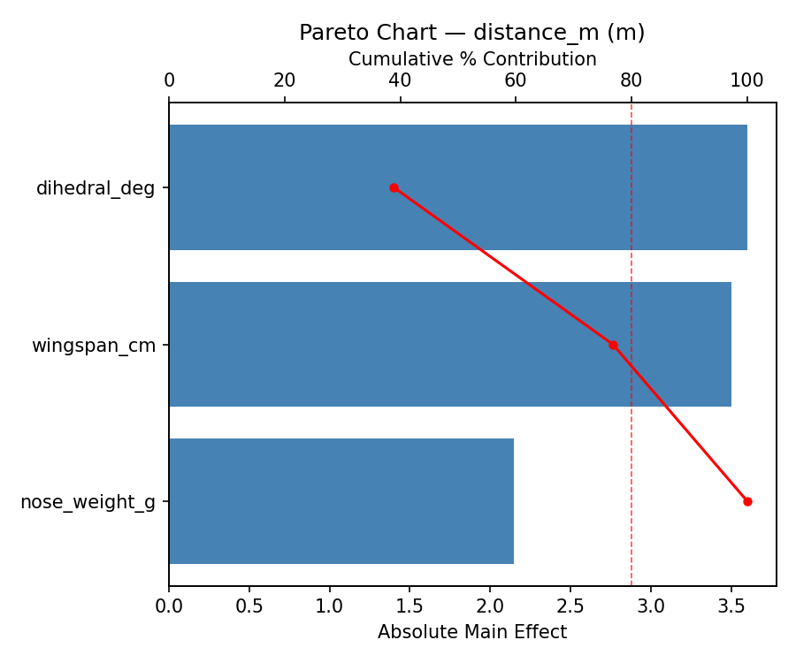
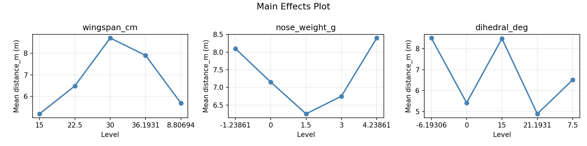
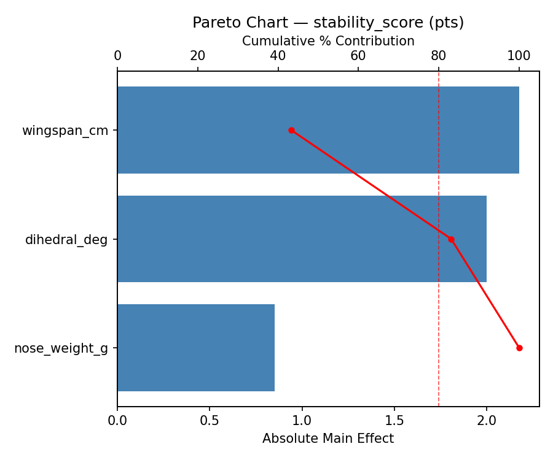
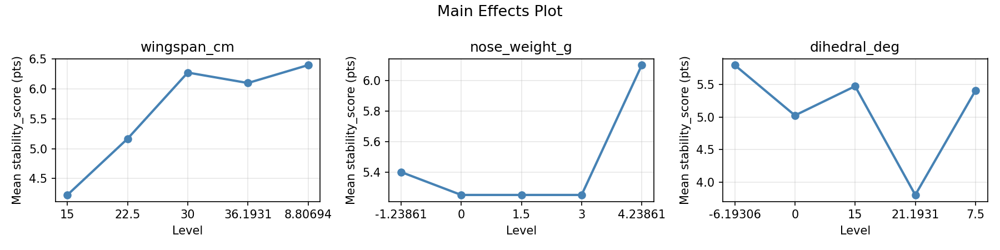
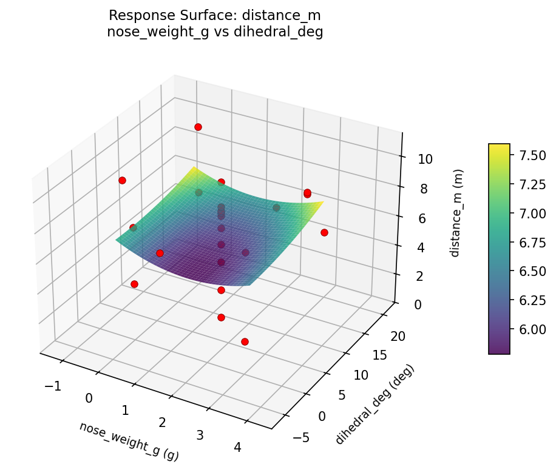
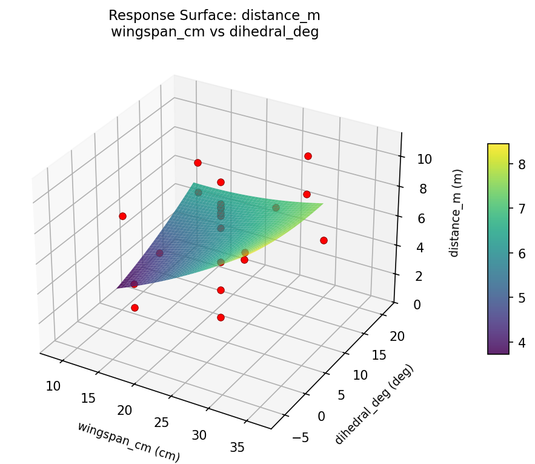
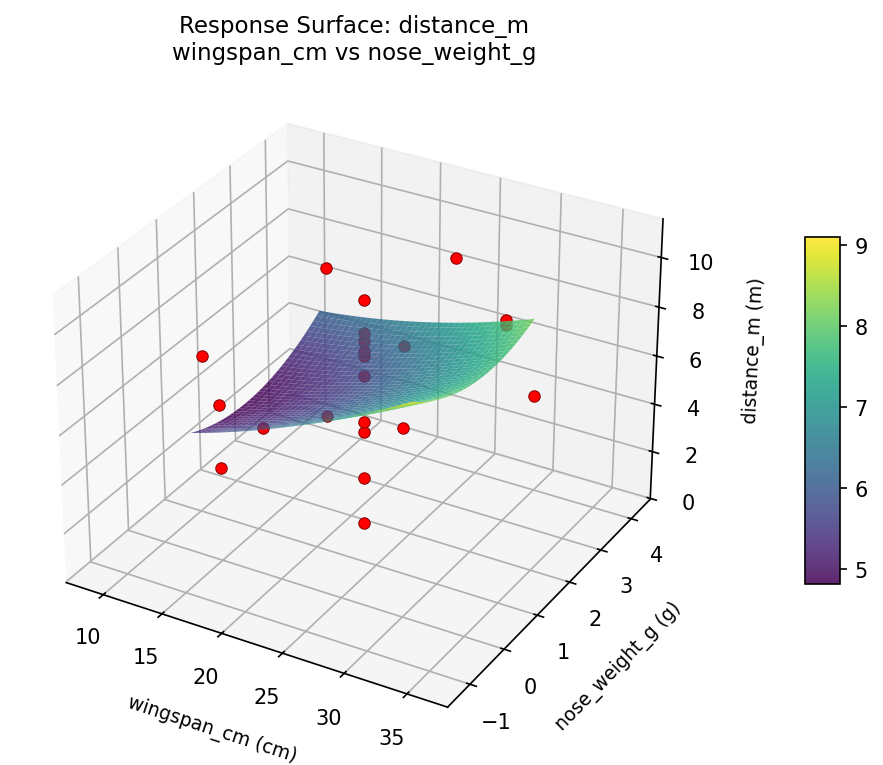
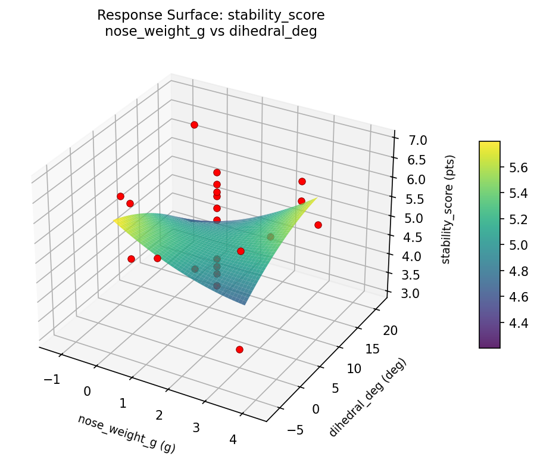
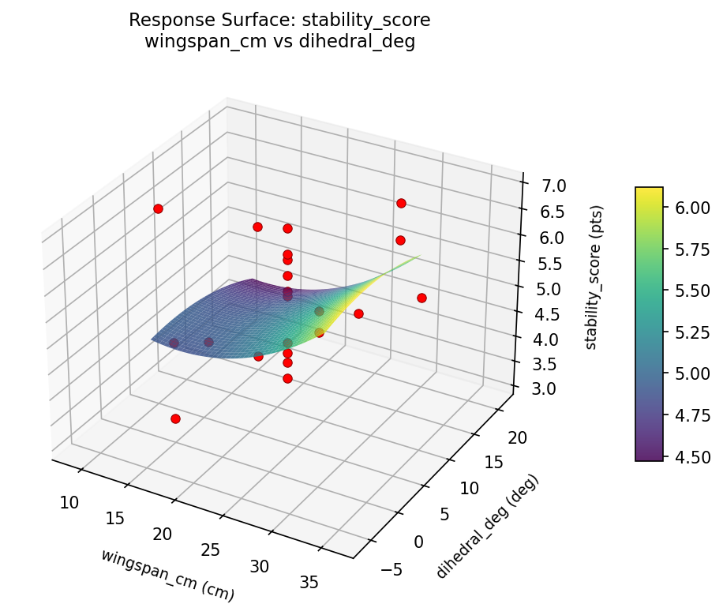
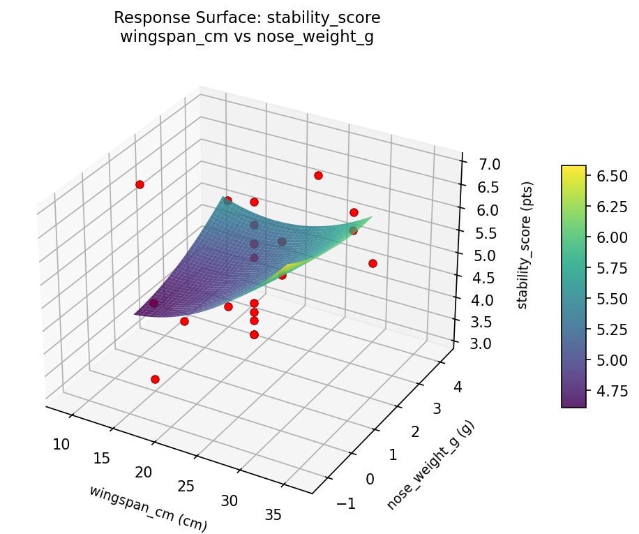

Summary
This experiment investigates paper airplane distance. Central composite design to maximize flight distance and stability by tuning wing span, nose weight, and dihedral angle.
The design varies 3 factors: wingspan cm (cm), ranging from 15 to 30, nose weight g (g), ranging from 0 to 3, and dihedral deg (deg), ranging from 0 to 15. The goal is to optimize 2 responses: distance m (m) (maximize) and stability score (pts) (maximize). Fixed conditions held constant across all runs include paper = A4_80gsm, fold = dart.
A Central Composite Design (CCD) was selected to fit a full quadratic response surface model, including curvature and interaction effects. With 3 factors this produces 22 runs including center points and axial (star) points that extend beyond the factorial range.
Quadratic response surface models were fitted to capture potential curvature and factor interactions. The RSM contour plots below visualize how pairs of factors jointly affect each response.
Key Findings
For distance m, the most influential factors were dihedral deg (38.9%), wingspan cm (37.8%), nose weight g (23.2%). The best observed value was 10.8 (at wingspan cm = 30, nose weight g = 0, dihedral deg = 15).
For stability score, the most influential factors were wingspan cm (43.3%), dihedral deg (39.8%), nose weight g (16.9%). The best observed value was 6.9 (at wingspan cm = 30, nose weight g = 0, dihedral deg = 15).
Recommended Next Steps
- Run confirmation experiments at the predicted optimal settings to validate the model.
- Consider whether any fixed factors should be varied in a future study.
Experimental Setup
Factors
| Factor | Low | High | Unit |
|---|
wingspan_cm | 15 | 30 | cm |
nose_weight_g | 0 | 3 | g |
dihedral_deg | 0 | 15 | deg |
Fixed: paper = A4_80gsm, fold = dart
Responses
| Response | Direction | Unit |
|---|
distance_m | ↑ maximize | m |
stability_score | ↑ maximize | pts |
Configuration
{
"metadata": {
"name": "Paper Airplane Distance",
"description": "Central composite design to maximize flight distance and stability by tuning wing span, nose weight, and dihedral angle"
},
"factors": [
{
"name": "wingspan_cm",
"levels": [
"15",
"30"
],
"type": "continuous",
"unit": "cm"
},
{
"name": "nose_weight_g",
"levels": [
"0",
"3"
],
"type": "continuous",
"unit": "g"
},
{
"name": "dihedral_deg",
"levels": [
"0",
"15"
],
"type": "continuous",
"unit": "deg"
}
],
"fixed_factors": {
"paper": "A4_80gsm",
"fold": "dart"
},
"responses": [
{
"name": "distance_m",
"optimize": "maximize",
"unit": "m"
},
{
"name": "stability_score",
"optimize": "maximize",
"unit": "pts"
}
],
"settings": {
"operation": "central_composite",
"test_script": "use_cases/262_paper_airplane/sim.sh"
}
}
Experimental Matrix
The Central Composite Design produces 22 runs. Each row is one experiment with specific factor settings.
| Run | wingspan_cm | nose_weight_g | dihedral_deg |
|---|
| 1 | 22.5 | 1.5 | 7.5 |
| 2 | 30 | 0 | 15 |
| 3 | 15 | 3 | 0 |
| 4 | 22.5 | 4.23861 | 7.5 |
| 5 | 22.5 | 1.5 | 7.5 |
| 6 | 8.80694 | 1.5 | 7.5 |
| 7 | 22.5 | 1.5 | -6.19306 |
| 8 | 22.5 | 1.5 | 7.5 |
| 9 | 30 | 3 | 0 |
| 10 | 36.1931 | 1.5 | 7.5 |
| 11 | 22.5 | 1.5 | 7.5 |
| 12 | 22.5 | -1.23861 | 7.5 |
| 13 | 22.5 | 1.5 | 7.5 |
| 14 | 15 | 0 | 15 |
| 15 | 22.5 | 1.5 | 7.5 |
| 16 | 30 | 0 | 0 |
| 17 | 22.5 | 1.5 | 21.1931 |
| 18 | 30 | 3 | 15 |
| 19 | 22.5 | 1.5 | 7.5 |
| 20 | 15 | 0 | 0 |
| 21 | 15 | 3 | 15 |
| 22 | 22.5 | 1.5 | 7.5 |
Step-by-Step Workflow
1
Preview the design
$ python doe.py info --config use_cases/262_paper_airplane/config.json
2
Generate the runner script
$ python doe.py generate --config use_cases/262_paper_airplane/config.json \
--output use_cases/262_paper_airplane/results/run.sh --seed 42
3
Execute the experiments
$ bash use_cases/262_paper_airplane/results/run.sh
4
Analyze results
$ python doe.py analyze --config use_cases/262_paper_airplane/config.json
5
Get optimization recommendations
$ python doe.py optimize --config use_cases/262_paper_airplane/config.json
6
Generate the HTML report
$ python doe.py report --config use_cases/262_paper_airplane/config.json \
--output use_cases/262_paper_airplane/results/report.html
Features Exercised
| Feature | Value |
|---|
| Design type | central_composite |
| Factor types | continuous (all 3) |
| Arg style | double-dash |
| Responses | 2 (distance_m ↑, stability_score ↑) |
| Total runs | 22 |
Analysis Results
Generated from actual experiment runs using the DOE Helper Tool.
Response: distance_m
Top factors: dihedral_deg (38.9%), wingspan_cm (37.8%), nose_weight_g (23.2%).
Pareto Chart

Main Effects Plot

Response: stability_score
Top factors: wingspan_cm (43.3%), dihedral_deg (39.8%), nose_weight_g (16.9%).
Pareto Chart

Main Effects Plot

Response Surface Plots
3D surfaces fitted with quadratic RSM. Red dots are observed data points.
distance m nose weight g vs dihedral deg

distance m wingspan cm vs dihedral deg

distance m wingspan cm vs nose weight g

stability score nose weight g vs dihedral deg

stability score wingspan cm vs dihedral deg

stability score wingspan cm vs nose weight g

Full Analysis Output
RSM surface: rsm_distance_m_wingspan_cm_vs_nose_weight_g.png
RSM surface: rsm_distance_m_wingspan_cm_vs_dihedral_deg.png
RSM surface: rsm_distance_m_nose_weight_g_vs_dihedral_deg.png
RSM surface: rsm_stability_score_wingspan_cm_vs_nose_weight_g.png
RSM surface: rsm_stability_score_wingspan_cm_vs_dihedral_deg.png
RSM surface: rsm_stability_score_nose_weight_g_vs_dihedral_deg.png
=== Main Effects: distance_m ===
Factor Effect Std Error % Contribution
--------------------------------------------------------------
dihedral_deg 3.6000 0.5487 38.9%
wingspan_cm 3.5000 0.5487 37.8%
nose_weight_g 2.1500 0.5487 23.2%
=== Summary Statistics: distance_m ===
wingspan_cm:
Level N Mean Std Min Max
------------------------------------------------------------
15 4 5.2000 2.7471 2.2000 8.4000
22.5 12 6.4917 2.7361 0.7000 9.8000
30 4 8.7000 1.4306 7.6000 10.8000
36.1931 1 7.9000 0.0000 7.9000 7.9000
8.80694 1 5.7000 0.0000 5.7000 5.7000
nose_weight_g:
Level N Mean Std Min Max
------------------------------------------------------------
-1.23861 1 8.1000 0.0000 8.1000 8.1000
0 4 7.1500 2.9046 3.8000 10.8000
1.5 12 6.2500 2.6634 0.7000 9.8000
3 4 6.7500 3.0359 2.2000 8.4000
4.23861 1 8.4000 0.0000 8.4000 8.4000
dihedral_deg:
Level N Mean Std Min Max
------------------------------------------------------------
-6.19306 1 8.5000 0.0000 8.5000 8.5000
0 4 5.4250 2.8826 2.2000 8.1000
15 4 8.4750 1.8025 6.4000 10.8000
21.1931 1 4.9000 0.0000 4.9000 4.9000
7.5 12 6.5083 2.6695 0.7000 9.8000
=== Main Effects: stability_score ===
Factor Effect Std Error % Contribution
--------------------------------------------------------------
wingspan_cm 2.1750 0.2421 43.3%
dihedral_deg 2.0000 0.2421 39.8%
nose_weight_g 0.8500 0.2421 16.9%
=== Summary Statistics: stability_score ===
wingspan_cm:
Level N Mean Std Min Max
------------------------------------------------------------
15 4 4.2250 1.2420 3.1000 5.7000
22.5 12 5.1667 1.0147 3.8000 6.7000
30 4 6.2750 0.4573 5.8000 6.9000
36.1931 1 6.1000 0.0000 6.1000 6.1000
8.80694 1 6.4000 0.0000 6.4000 6.4000
nose_weight_g:
Level N Mean Std Min Max
------------------------------------------------------------
-1.23861 1 5.4000 0.0000 5.4000 5.4000
0 4 5.2500 1.6783 3.1000 6.9000
1.5 12 5.2500 1.0749 3.8000 6.7000
3 4 5.2500 1.3178 3.3000 6.2000
4.23861 1 6.1000 0.0000 6.1000 6.1000
dihedral_deg:
Level N Mean Std Min Max
------------------------------------------------------------
-6.19306 1 5.8000 0.0000 5.8000 5.8000
0 4 5.0250 1.2920 3.3000 6.2000
15 4 5.4750 1.6581 3.1000 6.9000
21.1931 1 3.8000 0.0000 3.8000 3.8000
7.5 12 5.4083 0.9885 3.8000 6.7000
Pareto chart (distance_m): use_cases/262_paper_airplane/results/analysis/pareto_distance_m.png
Pareto chart (stability_score): use_cases/262_paper_airplane/results/analysis/pareto_stability_score.png
Main effects (distance_m): use_cases/262_paper_airplane/results/analysis/main_effects_distance_m.png
Main effects (stability_score): use_cases/262_paper_airplane/results/analysis/main_effects_stability_score.png
Optimization Recommendations
=== Optimization: distance_m ===
Direction: maximize
Best observed run: #18
wingspan_cm = 30
nose_weight_g = 0
dihedral_deg = 15
Value: 10.8
RSM Model (linear, R² = 0.0508, Adj R² = -0.1074):
Coefficients:
intercept +6.6864
wingspan_cm -0.0665
nose_weight_g +0.2692
dihedral_deg +0.6362
RSM Model (quadratic, R² = 0.4772, Adj R² = 0.0852):
Coefficients:
intercept +6.1627
wingspan_cm -0.0665
nose_weight_g +0.2692
dihedral_deg +0.6362
wingspan_cm*nose_weight_g -0.7250
wingspan_cm*dihedral_deg +2.4000
nose_weight_g*dihedral_deg -0.1500
wingspan_cm^2 -0.1082
nose_weight_g^2 +0.3118
dihedral_deg^2 +0.5818
Curvature analysis:
dihedral_deg coef=+0.5818 convex (has a minimum)
nose_weight_g coef=+0.3118 convex (has a minimum)
wingspan_cm coef=-0.1082 concave (has a maximum)
Notable interactions:
wingspan_cm*dihedral_deg coef=+2.4000 (synergistic)
wingspan_cm*nose_weight_g coef=-0.7250 (antagonistic)
Predicted optimum (from quadratic model):
wingspan_cm = 30
nose_weight_g = 0
dihedral_deg = 15
Predicted value: 10.5238
Model quality: Weak fit — consider adding center points or using a different design.
Factor importance:
1. dihedral_deg (effect: 5.1, contribution: 48.0%)
2. wingspan_cm (effect: 3.3, contribution: 31.2%)
3. nose_weight_g (effect: 2.2, contribution: 20.8%)
=== Optimization: stability_score ===
Direction: maximize
Best observed run: #18
wingspan_cm = 30
nose_weight_g = 0
dihedral_deg = 15
Value: 6.9
RSM Model (linear, R² = 0.1147, Adj R² = -0.0329):
Coefficients:
intercept +5.2955
wingspan_cm +0.1262
nose_weight_g -0.0996
dihedral_deg +0.4310
RSM Model (quadratic, R² = 0.4896, Adj R² = 0.1068):
Coefficients:
intercept +5.3349
wingspan_cm +0.1262
nose_weight_g -0.0996
dihedral_deg +0.4310
wingspan_cm*nose_weight_g -0.4750
wingspan_cm*dihedral_deg +0.9000
nose_weight_g*dihedral_deg +0.3250
wingspan_cm^2 -0.1697
nose_weight_g^2 +0.1303
dihedral_deg^2 -0.0197
Curvature analysis:
wingspan_cm coef=-0.1697 concave (has a maximum)
nose_weight_g coef=+0.1303 convex (has a minimum)
dihedral_deg coef=-0.0197 negligible curvature
Notable interactions:
wingspan_cm*dihedral_deg coef=+0.9000 (synergistic)
wingspan_cm*nose_weight_g coef=-0.4750 (antagonistic)
nose_weight_g*dihedral_deg coef=+0.3250 (synergistic)
Predicted optimum (from quadratic model):
wingspan_cm = 30
nose_weight_g = 0
dihedral_deg = 15
Predicted value: 6.9825
Model quality: Weak fit — consider adding center points or using a different design.
Factor importance:
1. wingspan_cm (effect: 2.0, contribution: 43.9%)
2. dihedral_deg (effect: 1.6, contribution: 35.1%)
3. nose_weight_g (effect: 1.0, contribution: 21.0%)